Трапеции и KD (s = 0.5) симметричны, на них все схемы дают ровно 2/4/6 (P4C, P4R, P6C, P6R, P6SC). Средняя точка Грэгга почти симметрична: 2/4, но вместо 6 стандартные схемы дают 5. Метод Хойна и обычная явная средняя точка ограничены порядком 3.
Да, такие классы есть. Это неаналитическая правая часть (|y|, if, max), табличная f только от вещественного t, комплекснозначные ОДУ (для схем, опирающихся на проекцию Re), KD на системах в форме Фробениуса. Ещё один случай: слабо затухающая быстрая мода при крупном шаге, её P4C/P6C раскачивают.
В общем случае нет. На трапециях P4C и P6C теряют A-устойчивость: A(89.5°) и A(87.4°). У P4R и P6R полюс лежит на отрицательной полуоси. Да для трапеций, если набор γ замкнут относительно сопряжения и Re γ > 0 (P3C, P6SC). Для опор с комплексными полюсами это условие уже не достаточно, контрпример: Гаусс-3 ∘ P6SC.
Да, существуют. Для Грэгга порядок 6 даёт 5-стадийная симметрично-сопряжённая схема (с Re), а также палиндромы на 7 стадий (с Re) и на 9 стадий (без Re). Для любой несимметричной опоры 2-го порядка (Хойн) порядок 4 даёт схема из 3 стадий, порядок 6 схема из 7 стадий. Всё проверено в 50-значной арифметике.
Шаг композиции Ψh = Φγmh ∘ … ∘ Φγ1h состоит из m шагов опорного метода Φ 2-го порядка с комплексными шагами γih, Σγi = 1. Время каждой стадии тоже комплексное: t ← t + γih. Поэтому правая часть f(t, y) должна иметь аналитическое продолжение. Для вещественной задачи после каждого полного шага берётся Re(y) (проекция). Интегрирование идёт с постоянным шагом, на выходе считаются вызовы f и якобиана.
from csolver import integrate, BASE_METHODS, SCHEMES, problems p = problems.van_der_pol() r = integrate(p, BASE_METHODS["KD"], SCHEMES["P6C"], 100) # 100 шагов на [0, 10] print(r["y"], r["nf"]) # решение в T, число вызовов f
| метод | тип | симметричен | дефект Φ−h∘Φh − id | неявная часть |
|---|---|---|---|---|
| трапеции | неявный, A-устойчивый | да | 0 (1e-17; в 60 знаках 1e-61) | Ньютон по всей системе, комплексный |
| KD, s = 0.5 | полуявный: Эйлер–Кромер h/2, затем D-метод h/2 в обратном порядке компонент | да | 0 | скалярный Ньютон по каждой компоненте |
| KD, s ≠ 0.5 | то же | нет | ∝ h², порядок 1 | |
| средняя точка Грэгга, 2 подшага + сглаживание | явный 3-стадийный РК, b = (1/4, 1/2, 1/4) | почти | ∝ h⁶ (в поле нет члена h⁴) | нет |
| метод Хойна (Грэгг с 1 подшагом) | явный | нет | ∝ h⁴ | нет |
Для скалярной задачи KD(0.5) совпадает с трапециями побитово, для разделимых систем он совпадает с Штёрмером–Верле. Ревью подтвердило оба тождества в 60-значной арифметике.
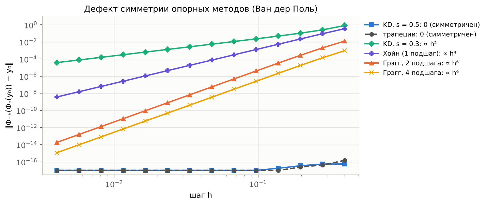
| схема | стадий | коэффициенты | Re γ > 0 |
|---|---|---|---|
| P2 | 1 | сама опора | да |
| P3C | 2 | γ = 1/2 ± i/(2√3): Σγ = 1, Σγ³ = 0 | да |
| P4C | 3 | комплексный тройной прыжок, γ1 = 1/(2 − 21/3e2πi/3) ≈ 0.3244 + 0.1346i, γ2 ≈ 0.3512 − 0.2692i | да |
| P4R | 3 | тройной прыжок Йошиды, γ2 ≈ −1.702 | нет |
| P6C | 9 | вложенный комплексный тройной прыжок (4 → 6, w = e4πi/5) | да (min 0.083) |
| P6R | 9 | вложенный вещественный тройной прыжок | нет |
| P6SC | 5 | симметрично-сопряжённая, γ6−i = conj γi; порядок 6 с проекцией Re | да |
Коэффициенты P6SC, уточнённые ревью до 30 знаков (опубликованные 14 знаков давали Σγ³ ≈ 1.4e-15):
γ1 = conj γ5 = 0.191032706998240587 + 0.088378311380010223 i γ2 = conj γ4 = 0.171229594293359206 − 0.187024947353514225 i γ3 = 0.275475397416800414
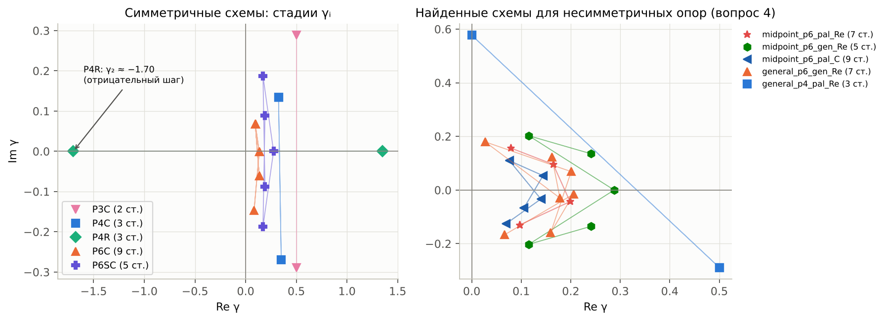
Ниже приведены все задачи с формулами, параметрами, начальными условиями и интервалом, ровно как они заданы в коде (csolver/problems.py, скрипты вопросов 2–4 и ревью). Все задачи нежёсткие и вещественные, кроме E2. Правые части записаны только через numpy-функции, поэтому они принимают комплексные t и y (аналитическое продолжение).
| № | задача | система | параметры, y(t0), интервал | эталон |
|---|---|---|---|---|
| 1 | гармонический осциллятор | y1′ = y2 y2′ = −y1 | y(0) = (1, 0), t ∈ [0, 10] | точное: exp(AT)y0 = (cos t, −sin t) |
| 2 | линейная система в форме Фробениуса (k = 0) | y1′ = y2 y2′ = −(σ² + ω²)y1 + 2σy2 (то есть x″ − 2σx′ + (σ² + ω²)x = 0) | σ = −0.2, ω = 2 (λ = −0.2 ± 2i): x″ + 0.4x′ + 4.04x = 0; y(0) = (1, 0), t ∈ [0, 10] | точное, exp(AT)y0 |
| 3 | логистическое уравнение | y′ = y(1 − y) | y(0) = 0.1, t ∈ [0, 5] | точное: y = y0et/(1 − y0 + y0et) |
| 4 | Ван дер Поль | y1′ = y2 y2′ = μ(1 − y1²)y2 − y1 | μ = 1; y(0) = (2, 0), t ∈ [0, 10] | DOP853, rtol 1e-14 |
| 5 | Лотка–Вольтерра | y1′ = a y1 − b y1y2 y2′ = −c y2 + d y1y2 | a = 1, b = 0.5, c = 0.75, d = 0.25; y(0) = (2, 1), t ∈ [0, 10] | DOP853 |
| 6 | задача Кеплера | q1′ = p1, q2′ = p2 pi′ = −qi/(q1² + q2²)3/2 | e = 0.5; y(0) = (1 − e, 0, 0, √((1 + e)/(1 − e))) = (0.5, 0, 0, √3); один период t ∈ [0, 2π] | точное: y(2π) = y(0) |
| 7 | Лоренц | x′ = s(y − x) y′ = x(r − z) − y z′ = xy − bz | s = 10, r = 28, b = 8/3; (x, y, z)(0) = (1, 1, 1), t ∈ [0, 1] | DOP853 |
| 8 | вынужденный Дуффинг (неавтономная) | y1′ = y2 y2′ = −0.2y2 − y1 − y1³ + 0.5 cos(1.2t) (x″ + 0.2x′ + x + x³ = 0.5 cos 1.2t) | y(0) = (1, 0), t ∈ [0, 10] | DOP853 |
| 9 | generic3 (только в ревью) | y1′ = y2² − sin y3 + t y2′ = e0.3y1 − y3y1 y3′ = cos(t y2) + y1y2 | t0 = 0.2, y(t0) = (0.3, −0.5, 0.7), T = 2 | mpmath, ряд Тейлора |
У всех задач якобиан задан аналитически (он нужен трапециям и KD). Высокоточная проверка ревью использует задачи 4–9 (локальная ошибка одного шага из y(t0), h = 0.4·2−k, k = 3…8, у Лоренца h/8). Графики сходимости в этом отчёте сделаны на задачах 4, 6, 8 и 5; галерея решений (рис. 3) охватывает задачи 2 и 4–8.
| где | задача | запись | параметры, y(0), интервал | что проверяет |
|---|---|---|---|---|
| 2, класс A | неаналитическая f | y′ = −|y| и для сравнения y′ = −y | y(0) = 1, t ∈ [0, 2]; точно e−t | |y| не голоморфна: комплексная стадия считает модуль комплексного числа |
| 2, класс B | табличная правая часть | y′ = −y + g(t), g = cos t | y(0) = 1, t ∈ [0, 3]; точно ½(cos t + sin t) + ½e−t; g задана кубическим сплайном по таблице с шагом 1e-3 и вычисляется от Re t | f определена только при вещественном t |
| 2, класс C | слабо затухающий осциллятор | x″ + 2ζωx′ + ω²x = 0 (y1′ = y2, y2′ = −ω²y1 − 2ζωy2) | ω = 40, ζ = 0.001; y(0) = (1, 0), t ∈ [0, 20]; амплитуда в T точно e−ζωT ≈ 0.449 | раскачка неразрешённой быстрой моды не A-устойчивыми схемами |
| 2, класс D | одна динамика в двух записях | нормальная форма (k = 1): y′ = [[σ, ω], [−ω, σ]] y форма Фробениуса (k = 0): y′ = [[0, 1], [−(σ² + ω²), 2σ]] y | σ = −5, ω = 1.5 (λ = −5 ± 1.5i); y(0) = (1, 0), t ∈ [0, 20] | зависимость KD от формы записи системы |
| 2, класс E | комплекснозначная ОДУ | y′ = i·y² вещественная форма y = u + iv: u′ = −2uv, v′ = u² − v² | y(0) = 1 (u, v) = (1, 0), t ∈ [0, 1]; точно y = 1/(1 − it), y(1) = (1 + i)/2 | схемы, у которых порядок держится на проекции Re |
| 3 | линейная тестовая система (как у Galchenko et al., 2026) | X′ = AX, A = [[a, b], [c, d]] с собственными числами σ ± iω: a = 2σk/(1 + k), d = 2σ/(1 + k), b = 1, c = ad − σ² − ω² | h = 1, точка σ + iω = hλ; k = 1 (нормальная форма) и k = 0 (Фробениус); критерий ρ(Re R) ≤ 1 | области устойчивости. Для трапеций и средней точки k не важен, это то же, что y′ = λy |
| 3 | функция устойчивости опор | трапеции: r(z) = (1 + z/2)/(1 − z/2) Гаусс-3: r(z) = (1 + z/2 + z²/10 + z³/120)/(1 − z/2 + z²/10 − z³/120) композиция: R(z) = Π r(γiz) | z = hλ, Re z ∈ [−3, 1], Im z ∈ [0, 30] | контрпример к общему достаточному условию |
| 3 | жёсткая быстрая мода + медленное решение | y′ = A(y − g(t)) + g′(t), A = [[σ, ω], [−ω, σ]], g(t) = (sin t, cos t) | σ = −0.5, ω = 26; y(0) = (0.5, 1), t ∈ [0, 30]; точно g(t) + eAt(y0 − g(0)); h = 1 и 0.5 | зачем нужна A-устойчивость (P6SC против P6C) |
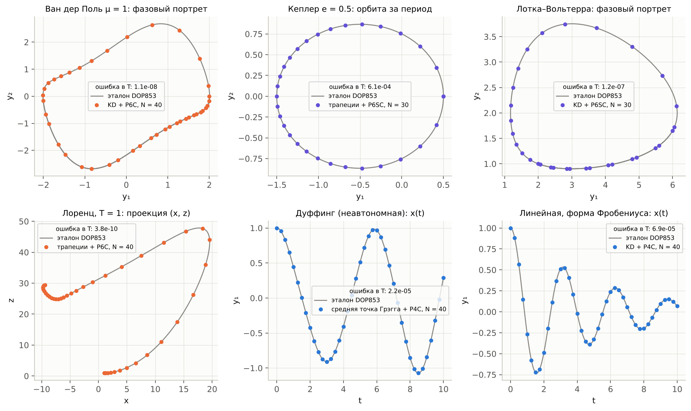
Глобальная ошибка в двойной точности упирается в округление (~1e-13), а у P6C константа ошибки очень мала: на трапециях линейный коэффициент около 1.4e-10. Поэтому асимптотический участок до плато почти отсутствует, и наклон МНК по последним точкам даёт бессмысленные значения (в исходной таблице встречались 13.02, 8.12, 7.36, 3.61). Медиана по задачам эти выбросы прятала. В этом отчёте порядки в таблицах взяты из проверки ревью: локальная ошибка в 50-значной арифметике, точный поток из ряда Тейлора, асимптотика видна до ошибок 1e-27. Графики в двойной точности показаны для наглядности, серой полосой на них отмечен уровень округления.
| опора | P2 | P3C | P4C | P4R | P6C | P6R | P6SC |
|---|---|---|---|---|---|---|---|
| трапеции | 2 | 4 | 4 | 4 | 6 | 6 | 6 |
| KD (s = 0.5) | 2 | 4 | 4 | 4 | 6 | 6 | 6 |
| средняя точка Грэгга | 2 | 4 | 4 | 4 | 5 | 5 | 5 |
| Хойн, явная средняя точка | 2 | 3 | 3 | 3 | 3 | 3 | 3 |
Локальная ошибка в высокой точности, 6 нелинейных задач, отклонений нет ни на одной (ревью, r3). Для P3C и P6SC порядки указаны с проекцией Re.
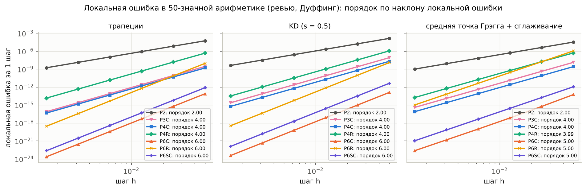
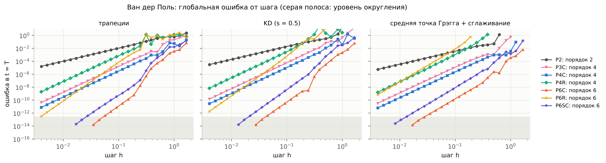
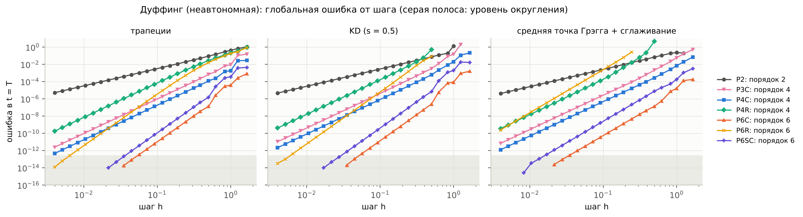
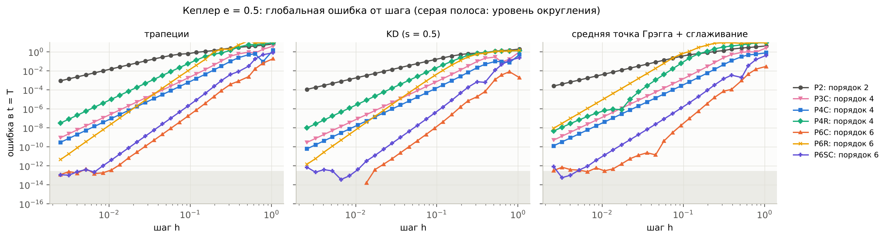
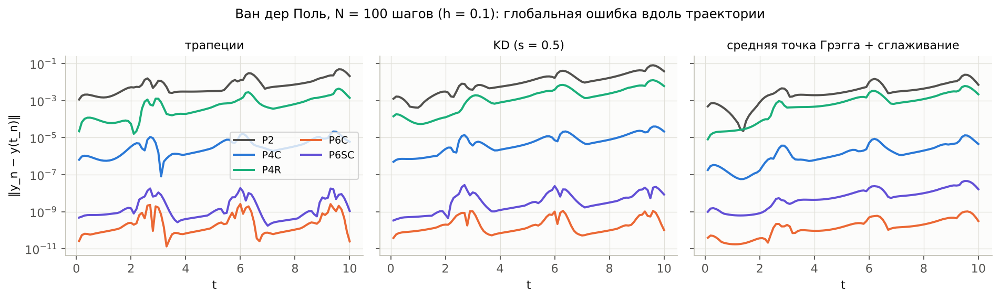
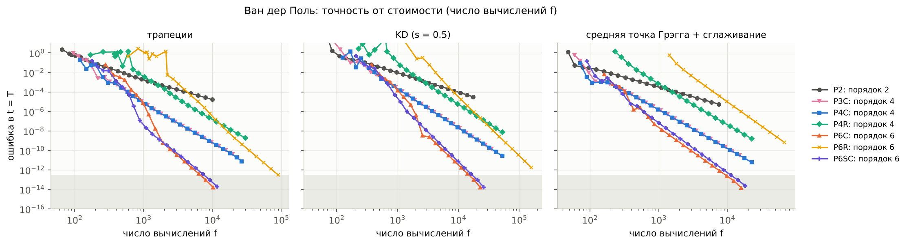
| задача | опора | P3C | P4C | P4R | P6C | P6R | P6SC |
|---|---|---|---|---|---|---|---|
| Ван дер Поль | трапеции | 5040 | 4990 | 19800 | 1540 | 16300 | 1210 |
| KD | 12200 | 12000 | 48100 | 2440 | 37700 | 3050 | |
| Грэгг | 3570 | 3530 | 14300 | 1180 | 39400 | 1440 | |
| Дуффинг | трапеции | 2490 | 2460 | 10900 | 1150 | 9690 | 945 |
| KD | 6300 | 6350 | 23600 | 2130 | 18300 | 2070 | |
| Грэгг | 2410 | 2360 | 9840 | 943 | 32100 | 1130 |
Табл. Число вызовов f, нужное для ошибки 1e-8 в конечной точке (логарифмическая интерполяция по рис. 5–6). P2 этой точности при N ≤ 2500 не достигает. Лучшая схема в строке выделена.
Сюда относятся |y|, sign, max/min, ReLU, округление и ветвления if y > 0. Пример y′ = −|y|, y(0) = 1: решение e−t, на нём y > 0, и вдоль траектории f гладкая. Однако на комплексной стадии вычисляется модуль комплексного числа, а не аналитическое продолжение −y.
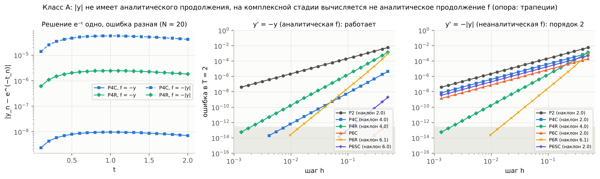
np.interp с python complex падает с TypeError. С numpy complex128 он возвращает число, молча отбросив мнимую часть. То же происходит с внешними моделями, данными измерений и сплайнами по таблице. Ошибки нет, но порядок теряется.
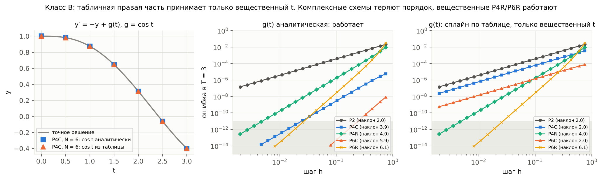
Пример x″ + 2ζωx′ + ω²x = 0, ω = 40, ζ = 0.001, T = 20, опора трапеции. Это не нежёсткая задача в строгом смысле: при hω ≥ 5 колебание сеткой не разрешено, и даже опорные трапеции дают амплитуду 0.9–0.99 вместо 0.449. Такой режим правильнее называть колебательно-жёстким. Тем не менее он встречается на практике, когда быструю моду хотят «перешагнуть».
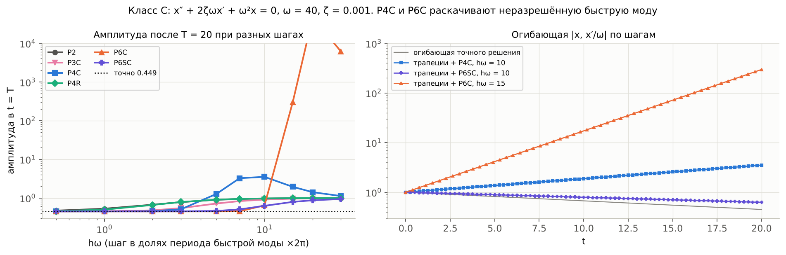
Линейная задача с λ = −5 ± 1.5i в нормальной форме (k = 1) и та же динамика в форме Фробениуса (k = 0, переменные u и u′). Трапеции к записи нечувствительны, KD нет. Сюда относятся все системы, записанные через старшую производную (u″ = …), с умеренно большими |λ|.
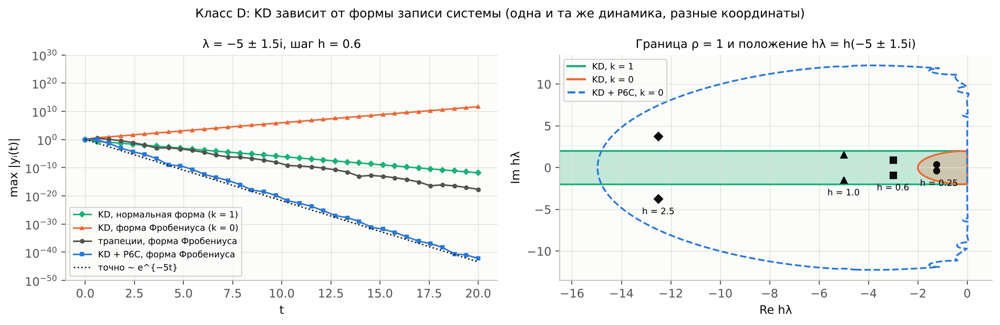
Если сама задача комплексная (уравнение Шрёдингера, огибающие сигналов, y′ = i·y²), взять Re нельзя. Тогда схемы, порядок которых держится на проекции, теряют его: P6SC даёт 3 вместо 6, P3C даёт 3 вместо 4, midpoint_p6_gen_Re даёт 3, general_p6_pal_Re даёт 4. P4C и P6C сохраняют 4 и 6, потому что их порядок от проекции не зависит.
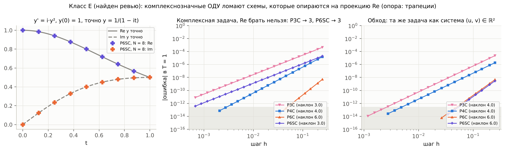
Для явной средней точки и KD при любой схеме область устойчивости конечна (вопрос 3). Поэтому умеренно жёсткие задачи требуют у них малого шага, но это уже не «нежёсткий» класс.
| схема (трапеции) | A-устойчива | угол A(α) | max ρ на мнимой оси |
|---|---|---|---|
| P2, P3C, P6SC | да | 90° | 1 |
| P4C | нет | 89.54° | 1.0184 при hλ ≈ 10.1i |
| P6C | нет | 87.36° | 1.404 при hλ ≈ 26.3i |
| P4C / P6C без проекции Re | нет | 83.5° / 81.2° | 1.21 / 2.39 |
| P4R, P6R | нет | 0° | полюс на отрицательной полуоси: hλ = 2/γ2 ≈ −1.175 (P4R) |
Ревью получило эти числа аналитически (принцип максимума для рациональной μ(z)), совпадение с сеточным расчётом до 0.05°.
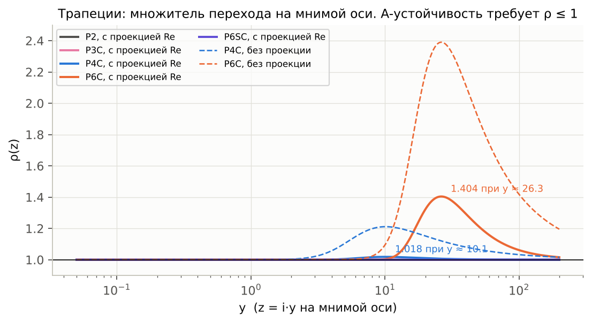
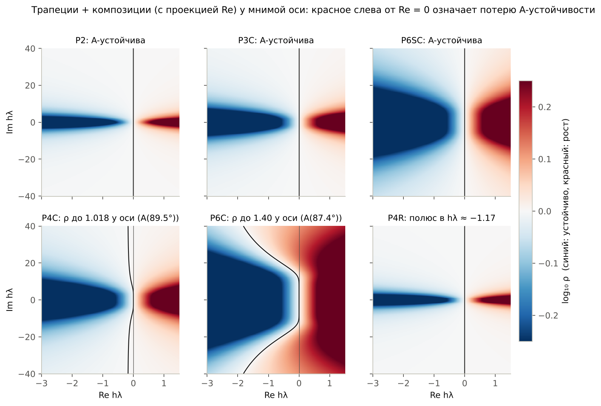
Утверждение. Пусть опора симметрична и A-устойчива, её функция устойчивости r имеет вещественные коэффициенты (тогда r(−z) = 1/r(z), r(z̄) = conj r(z)), и все полюса r лежат на вещественной оси, как у трапеций, r = (1 + z/2)/(1 − z/2). Если Re γi > 0 и набор {γi} замкнут относительно сопряжения, то композиция A-устойчива.
Доказательство. Полюс r(γz) находится в z = wp/γ, где wp > 0 вещественно. Тогда Re(wp/γ) = wp·Re γ/|γ|² > 0, и все полюсы R(z) = Π r(γiz) лежат в правой полуплоскости. По принципу максимума достаточно проверить мнимую ось. Для z = iy верно γ̄·iy = −conj(γ·iy), откуда |r(γ̄iy)| = 1/|r(γiy)|. Сомножители разбиваются на сопряжённые пары с произведением модулей 1, поэтому |R(iy)| = 1. ∎
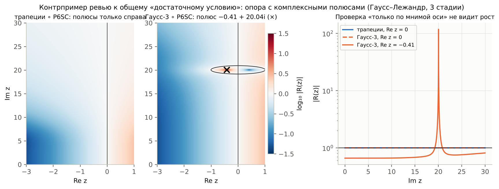
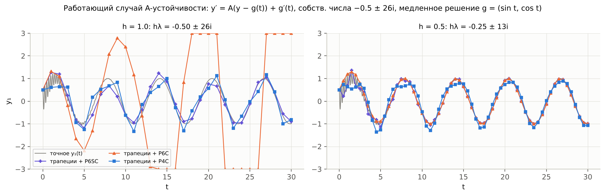
Ни KD, ни Грэгг не A-устойчивы уже как опоры, ρ на мнимой оси растёт неограниченно. Комплексные композиции заметно расширяют ограниченную область, а вещественные дробят её на мелкие куски, как и в статье Galchenko et al. (2026).
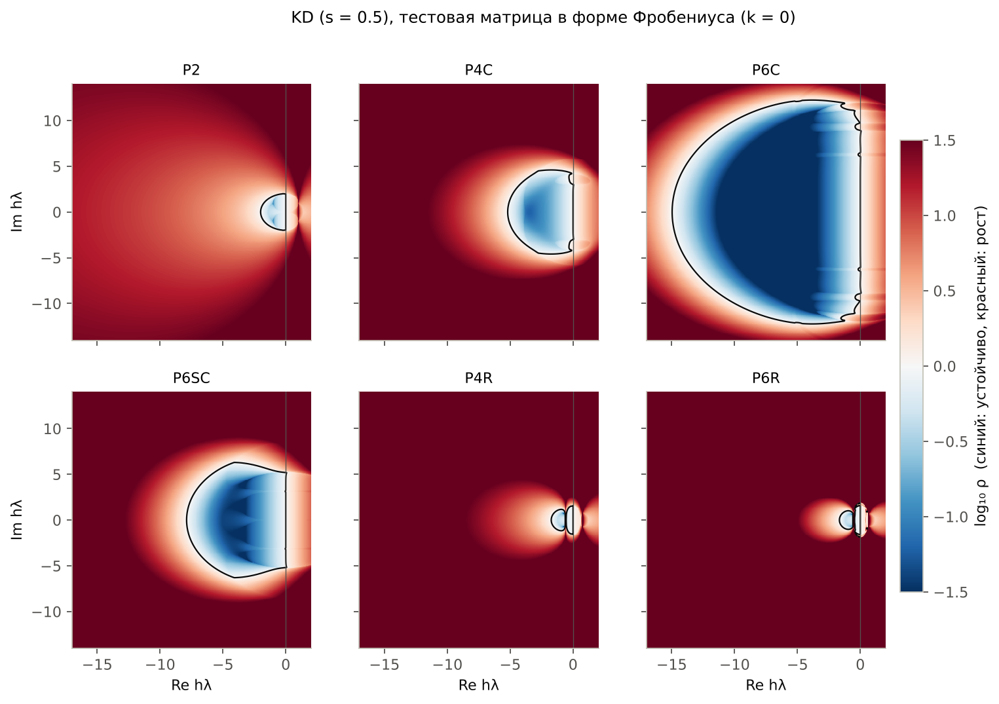
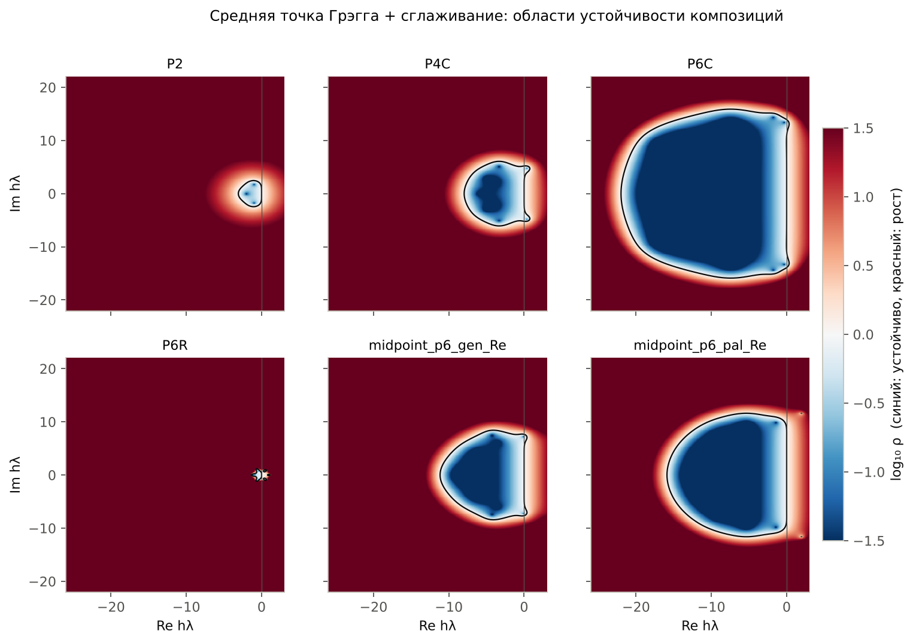
Опора моделируется как Φh = exp(hF1 + Σk∈K hkFk), где Fk — члены модифицированного поля. Для Грэгга K = {3, 5, 6, 7}, без h⁴: это следует из измеренного дефекта h⁶ (рис. 1). Для произвольной несимметричной опоры K = {3, 4, 5, 6, 7}. Композиция раскладывается в ряд по h с некоммутирующими Fk (случайные матрицы 7×7; тождеств степени ≤ 7 на них нет по теореме Амицура–Левицкого). Коэффициенты ищутся многостартовым методом Левенберга–Марквардта из условия, что ряд совпадает с exp(hF1) до hp. При проекции Re обнуляться должна только вещественная часть коэффициентов. Ревью перепроверило все решения точными условиями через слова свободной алгебры и уточнило их методом Гаусса–Ньютона в 50 знаках.
| схема | для опоры | порядок | стадий | вид | проекция Re | проверка (локально, 50 знаков) |
|---|---|---|---|---|---|---|
| midpoint_p6_gen_Re | Грэгг | 6 | 5 | симметрично-сопряжённая | нужна | 5.99–6.01 |
| midpoint_p6_pal_Re | Грэгг | 6 | 7 | палиндром | нужна | 5.99–6.01 |
| midpoint_p6_pal_C | Грэгг | 6 | 9 | палиндром | не нужна | 5.99–6.00 |
| general_p4_gen_Re | любая 2-го порядка | 4 | 3 | (сопряжённая) | нужна | 3.99–4.00 (Хойн) |
| general_p4_pal_Re (точное) | любая | 4 | 3 | палиндром, Re γ2 = 0 | нужна | 3.99–4.01 |
| general_p4_gen_C / pal_C | любая | 4 | 4 / 5 | общий / палиндром | не нужна | 3.99–4.01 |
| general_p6_gen_Re | любая | 6 | 7 | общий | нужна | 5.99–6.00 |
| general_p6_pal_Re | любая | 6 | 9 | палиндром | нужна | 5.99–6.00 |
Минимальность числа стадий не доказана, но поиск ревью с 1500 стартами для m на 1–2 меньше решений не нашёл. Схемы для Грэгга на Хойне дают 3: они строились под F4 = 0. Если под «средней точкой» понимать обычную явную среднюю точку, годятся только схемы general_*.
Ключевые коэффициенты (уточнённые, 15 знаков):
midpoint_p6_gen_Re (Грэгг, порядок 6, 5 стадий; γ5 = conj γ1, γ4 = conj γ2): γ1 = 0.240782556017887 − 0.135351197775927 i γ2 = 0.115368169128686 − 0.202327619068111 i γ3 = 0.287698549706855 general_p4_pal_Re (любая опора, порядок 4, 3 стадии), точное решение: γ1 = γ3 = 1/2 − i/(2√3), γ2 = i/√3 general_p4_gen_Re (любая опора, порядок 4, 3 стадии): γ1 = conj γ3 = 0.264561109082123 + 0.298502619110631 i, γ2 = 0.470877781835755 general_p6_gen_Re (любая опора, порядок 6, 7 стадий): 0.066457799936753−0.166866483414894i 0.205833171755279−0.015074148638976i 0.159533076019714−0.159429278835120i 0.200918047206686+0.068726888040856i 0.027038247788682+0.179681223621302i 0.178206598269560−0.029764749770839i 0.162013059023326+0.122726548997672i
Полные наборы лежат в review/data/polished.json (30 знаков) и в исходном results/coeff_search.json. Исходные коэффициенты верны с точностью около 1e-7: решения образуют вырожденные семейства. На двойную точность это не влияет.
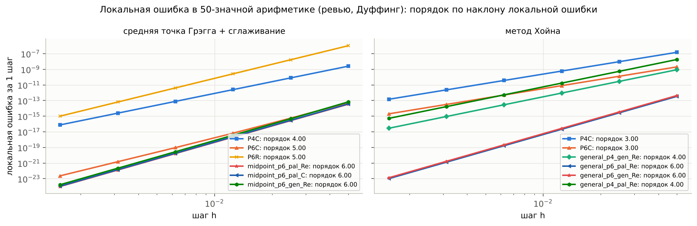
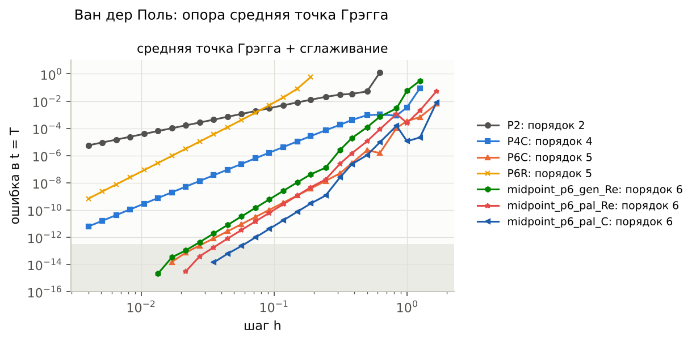
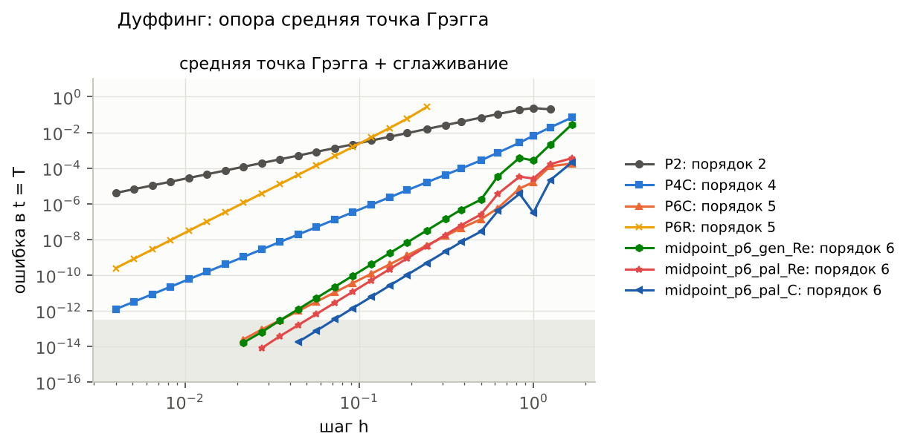
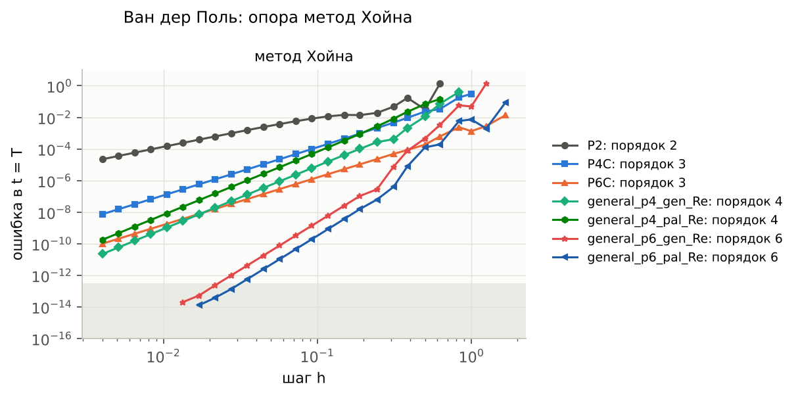
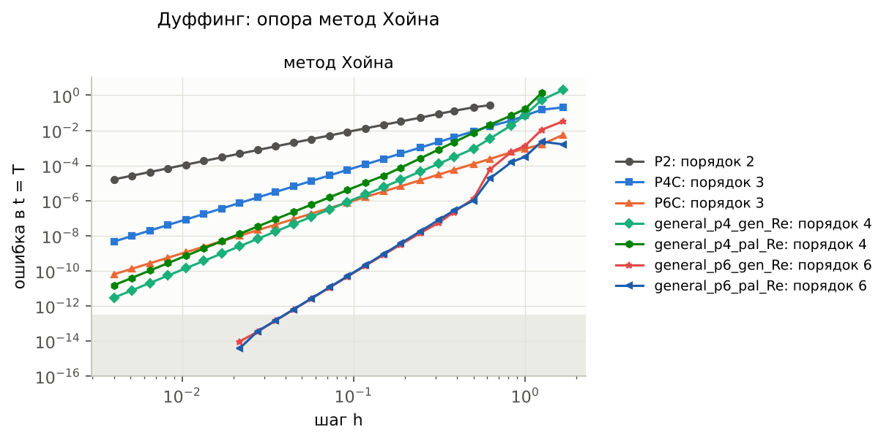
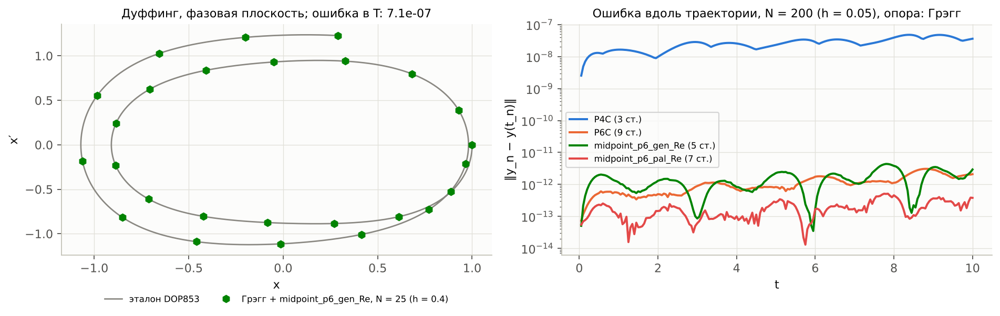
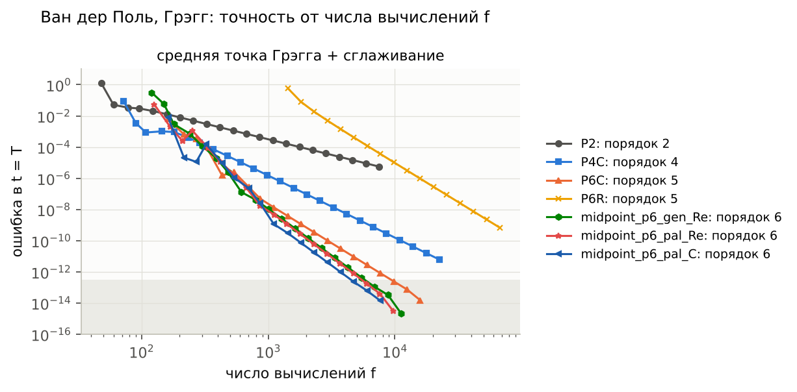
Нейросеть в работе не применялась, и это сознательное решение. Условия порядка — многочлены от γ, система небольшая (до 18 вещественных неизвестных). Многостартовый поиск находит решения надёжно, после чего они проверяются точно, с невязкой до 1e-50 после уточнения. Нейросеть дала бы лишь приближённые коэффициенты, которые всё равно пришлось бы доуточнять тем же методом Ньютона. Если нейросетевая часть нужна формально, у неё есть две разумные роли:
Скрипт: kd_article_repro/kd_repro.py (около 1.5 минуты), сравнения: kd_article_repro/compare/.
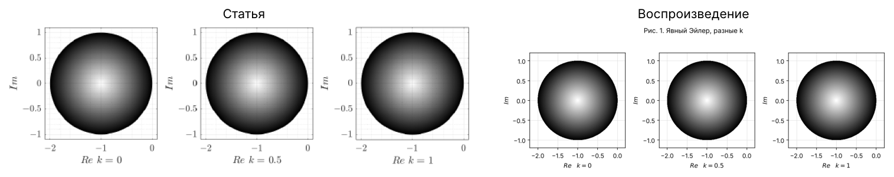
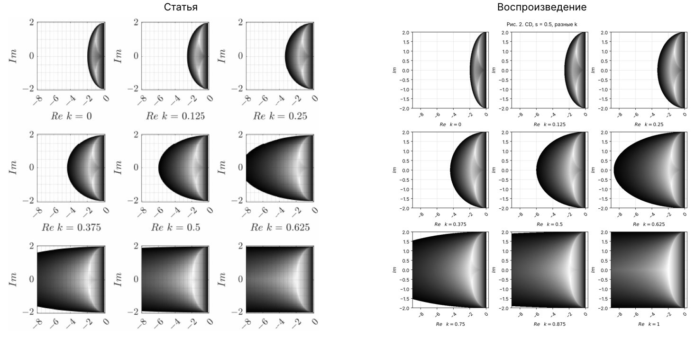
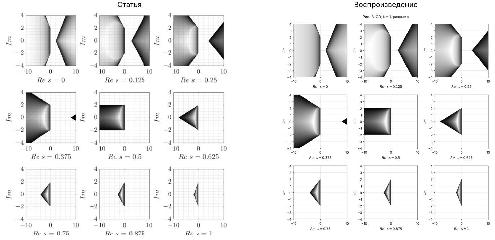
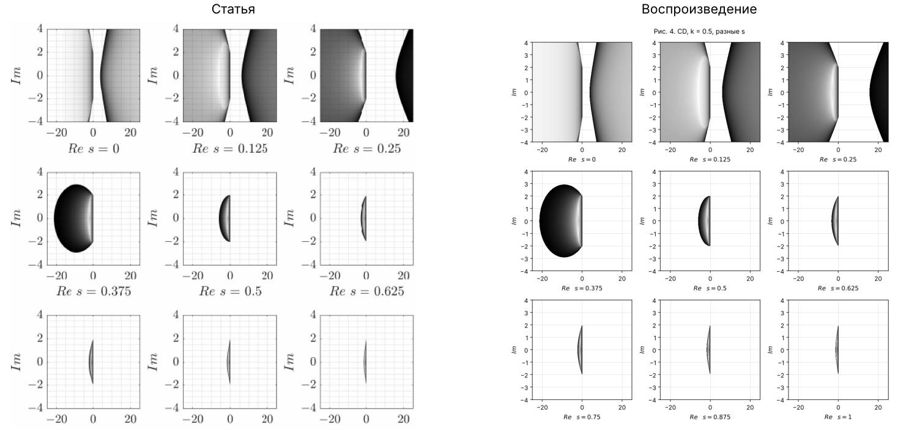
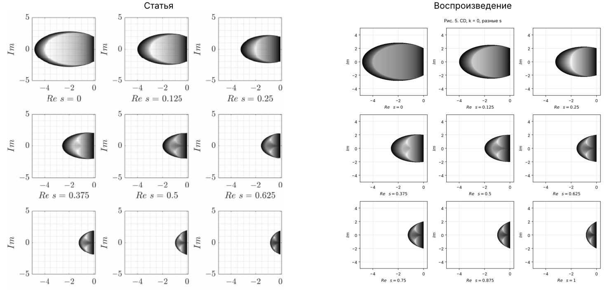
На сетке исходных корней σ, ω ∈ {−3, …, 3} показано, куда уходят собственные числа эффективной матрицы F = (R − I)/h, когда меняются шаг h и коэффициент симметрии s. Если дискретная модель точна, корни остаются в исходной точке (красный круг). Отход влево означает цифровую диссипацию, отход вправо цифровую неустойчивость. Чем меньше h, тем ближе траектория к исходному корню; цвет показывает, при каком s это происходит.
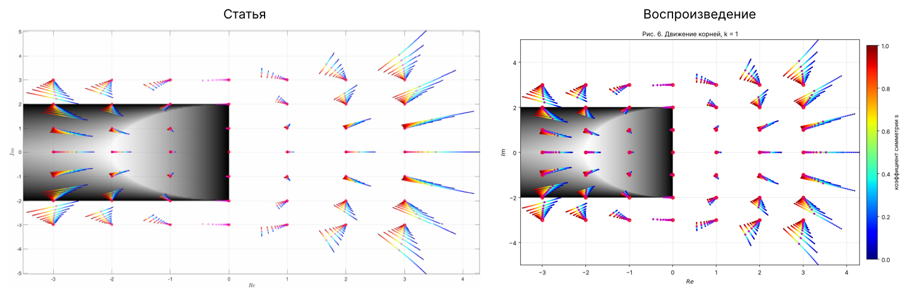
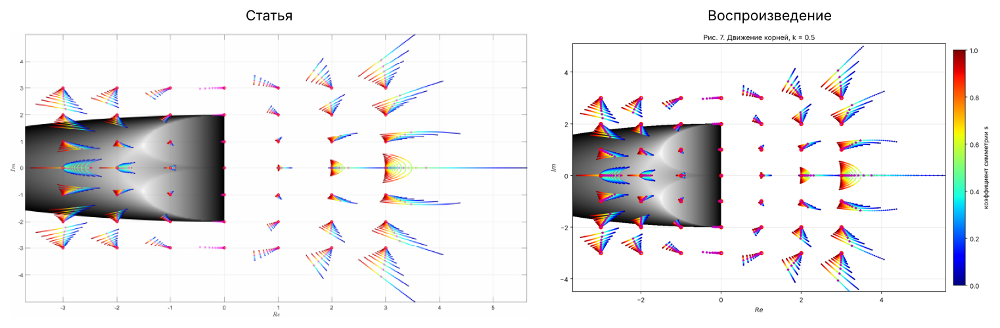
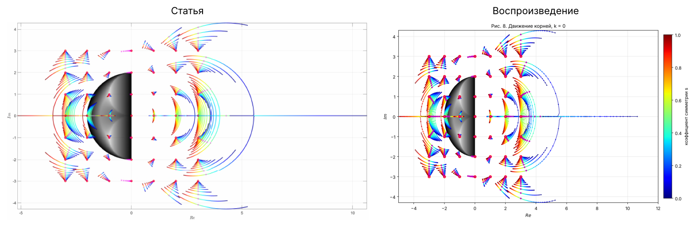
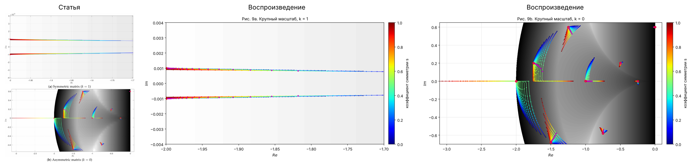
| № | что в коде | что на рисунках | что сделано |
|---|---|---|---|
| 1 | Для корней на вещественной оси (ω = 0) рисуется только lams(2). LAPACK (и в MATLAB, и в numpy) возвращает сопряжённую пару в порядке +Im, −Im, так что должна получаться только нижняя ветвь. | На рис. 7–8 дуги у этих корней симметричны относительно оси. | При ω = 0 рисуются оба собственных числа. |
| 2 | Тестовые точки рис. 9 в тексте и коде не перечислены. | Их видно по красным кругам. | Точки сняты с рисунка: для 9a это −2 ± 0.001i, для 9b девять точек (список в kd_repro.py). У точек «на оси» в 9b видна одна ветвь, поэтому взят сдвиг ±1e-3 по Im; это согласуется с текстом к рис. 7 про корни ±10⁻³. |
| 3 | Сетка фона: Re от −4.1 до 0.1, Im от −1.75 до 1.65. | Фон на рис. 6–8 покрывает |Im| до 2 и больше. | Фон считается на окне рисунка; диапазоны осей сняты с опубликованных рисунков. |
Связь с основной работой. Повтор подтверждает, что наша функция устойчивости KD (csolver/stability.py) совпадает со статьёй: та же тестовая матрица, та же область при s = 0.5 и k = 0. Отсюда два вывода, которыми пользуются вопросы 2–3. KD годится опорой для симметричных композиций только при s = 0.5. А область его устойчивости, ограниченная при k = 0, хорошо расширяется комплексными схемами (рис. 19).
| утверждение в RESEARCH.md | как правильно (по ревью) |
|---|---|
| Достаточное условие A-устойчивости верно для любой симметричной A-устойчивой опоры с вещественными коэффициентами r | Верно только при вещественных полюсах r (трапеции). Контрпример Гаусс-3 ∘ P6SC. Для общей опоры нужно |arg γ| + |arg wp| < 90°. |
| P6SC без проекции Re имеет порядок 3 | Если Re взять только в конце, глобальный порядок 6 сохраняется (5.99–6.08). Порядок 3 проявляется только на комплекснозначных ОДУ (новый класс E). |
| У всех найденных схем Re γ > 0 | Неверно для general_p4_pal_Re: точное решение существует только при Re γ2 = 0, это γ = (1/2 − i/(2√3), i/√3, 1/2 − i/(2√3)). |
| Наблюдаемые порядки по медиане МНК-наклонов | В таблице были артефакты (13.02, 8.12, 7.36, 3.61, 3.51), медиана их прятала. Итоговые порядки верны, но подтверждены только высокоточной проверкой локальной ошибки. |
| Класс 3 вопроса 2: «нежёсткие слабо затухающие колебания» | При hω ≥ 5 мода не разрешена сеткой, это колебательно-жёсткий режим. Механизм (не A-устойчивые P4C/P6C) подтверждён. |
| Коэффициенты проверены точно (невязка < 1e-11) | Многие верны лишь до ~1e-7 из-за вырожденности семейств. Уточнённые значения в review/data/polished.json. |
| midpoint_p6_gen_Re — схема общего вида | После уточнения она точно симметрично-сопряжённая. |
| P6SC «найдена в этой работе» | Новизна не проверена: симметрично-сопряжённые композиции изучались (Blanes, Casas, Chartier, Escorihuela-Tomàs, Math. Comp. 2022). |
Подтвердилось независимо: реализации опор и их симметрия, порядки 2/4/6 на трапециях и KD, порядок 5 на Грэгге и 3 на Хойне, области устойчивости KD, углы A(α), существование коэффициентов для несимметричных опор, классы A, B, D вопроса 2.
pip install numpy scipy matplotlib mpmath cd report/src python3 fig_q1.py # введение и вопрос 1 (~40 с на 4 ядрах) python3 fig_q2.py # вопрос 2 python3 fig_q3.py # вопрос 3 python3 fig_q4.py # вопрос 4 python3 ../../kd_article_repro/kd_repro.py # раздел 6 (статья о KD) node build_pdf.js # этот PDF
Скрипты подключают composition_solver/csolver без изменений; уточнённые коэффициенты читаются из review/data/polished.json, высокоточные локальные ошибки из review/data/r3_local*.json.